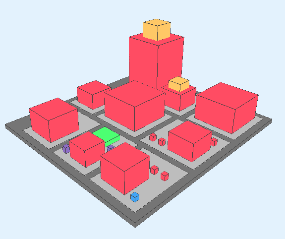
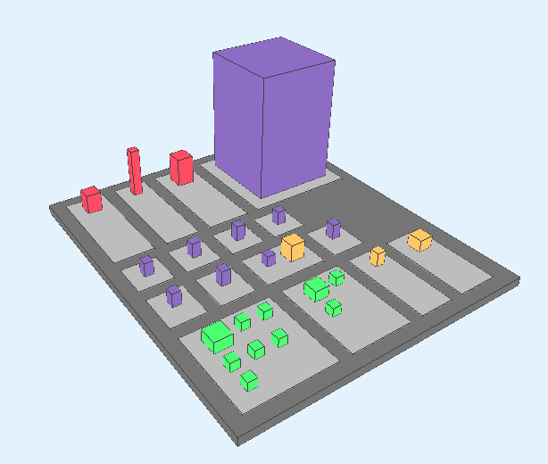
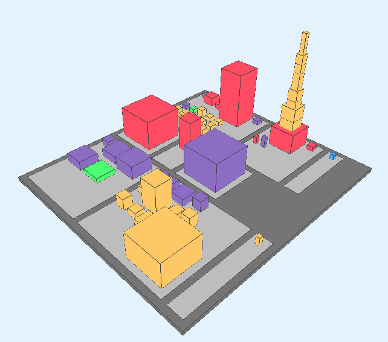
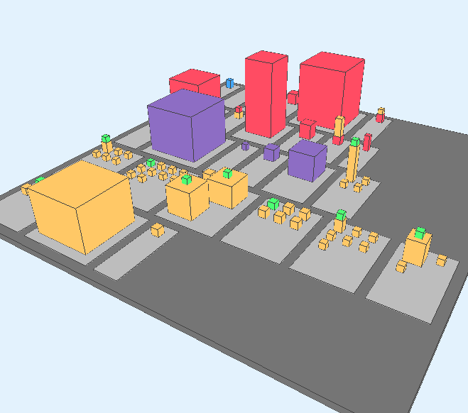
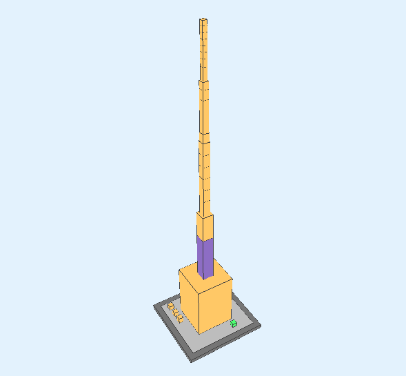

system_update_alt
Download the Extractor!
Download the extractor and the guide to run over your Swift project. This link leads you to the project which explains how to build your project and extract the metadata needed by the visualizer.
play_circle_filled
Run The Visualizer!
Utilizing elements and principles of City Metaphor, this web application takes your project's metadata and creates the city that correponds to your system. Having that you will be able to explore your system code for many insights.
new_releases
News!
- 19/12/2016 - Swiftcity app is online!
Cities!
We took open source projects which and visualized them using our tool. See the cities below for some of the most starred Swift projects in GitHub.
CVCalendar, Alamofire, RxSwift, Animated-Tab-Bar, Async, Cartography, Perfect, SnapKit, Spring, Swift JSON.









